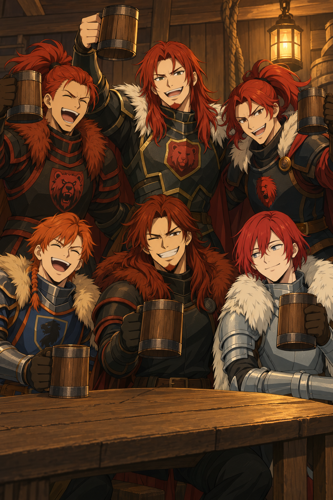
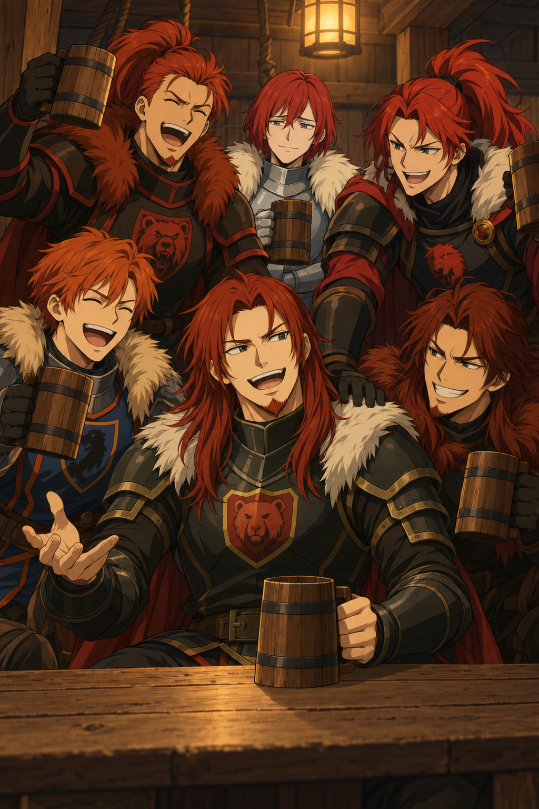
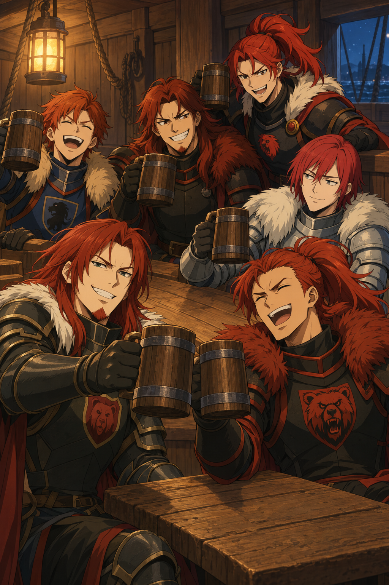

Ein Hoch auf den Seebären
Drei Gruppenbilder im Format 2:3. Zum Öffnen der Originalgröße ein Bild anklicken.

Bild 1 · Ein Hoch auf den Seebären
Rhydian, Ianto, Gwylim, Llew, Unig und Padrig

Bild 2 · Die Geschichte vom Dreizack
Rhydian, Ianto, Gwylim, Llew, Unig und Padrig

Bild 3 · Noch eine Runde
Rhydian, Ianto, Gwylim, Llew, Unig und Padrig